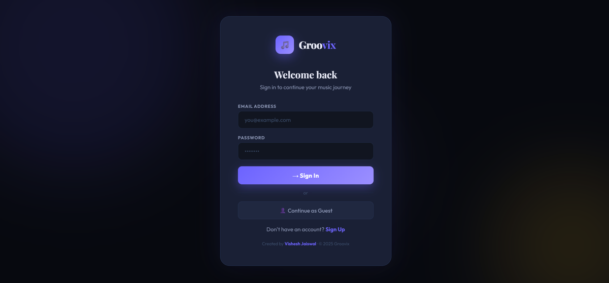
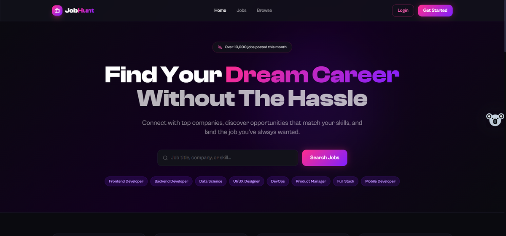
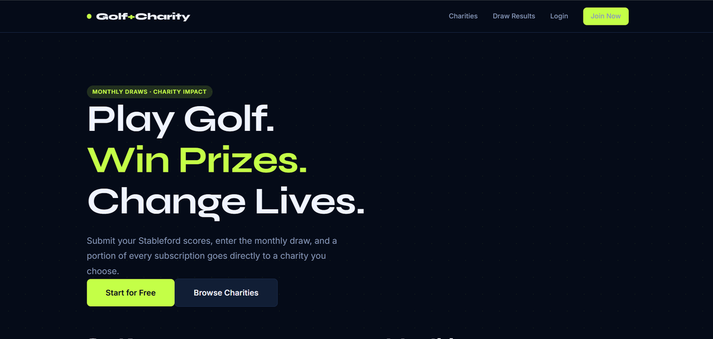
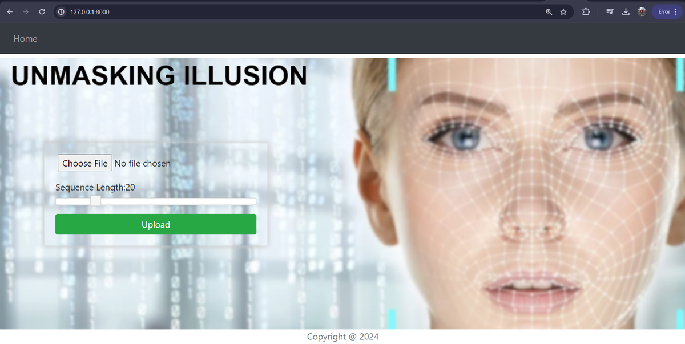
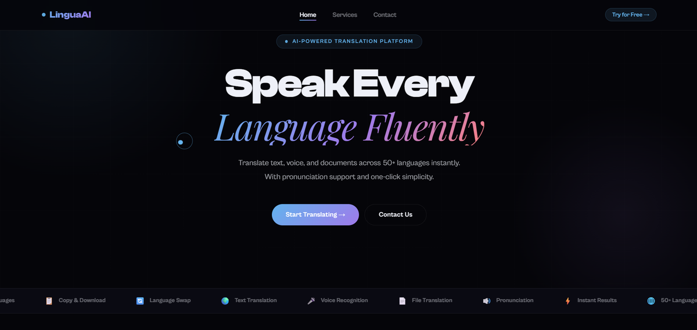

Crafting pixel-perfect interfaces and scalable full-stack apps. Passionate about clean code, great UX, and bringing ideas to life.
Projects
Internship
Yrs Coding
Hi, I'm Vishesh Jaiswal 👋 — a passionate web developer who enjoys building modern, responsive, and user-friendly web applications.
I recently graduated with a B.Tech in Computer Science from Jaypee University of Information Technology. My primary focus is MERN stack development, where I build scalable web applications using React, Node.js, Express, and MongoDB.
I love transforming ideas into real digital experiences through clean design, efficient code, and creative problem solving. I pay close attention to performance, accessibility, and the small UI details that make a product feel polished.
B.Tech CSE · JUIT Waknaghat
2021–2025MERN Stack Development
Web Dev · Cloud Computing
Cricket 🏏 · Music 🎧
Technologies
Projects Built
Certifications
Jaypee University of Information Technology, Waknaghat
Developed strong fundamentals in core CS subjects and applied them through real-world projects.
Infowiz Software Solution
Built full-stack MERN applications and responsive web interfaces. Worked on React frontend components, Node.js/Express REST APIs, MongoDB database integration, and delivered production-ready features within sprint cycles.

Spotify-inspired MERN stack music streaming app with real-time YouTube API search, JWT authentication, playlist management, and an animated dark-mode player UI.
Groovix integrates the YouTube Data API to search and stream songs in real-time without storing any audio files. Users can create accounts, build personal playlists, like songs, and control playback (play/pause, seek, volume, shuffle) through a Spotify-style player UI. The Node.js + Express backend handles JWT-based authentication with HTTP-only cookie sessions. All user data — accounts, playlists, likes — is persisted in MongoDB. Frontend built with React + Vite, featuring fluid animations and a fully dark responsive design.

Full-stack dual-role job portal — job seekers apply and track applications, recruiters post jobs and manage candidates. Built with Google OAuth, Cloudinary, and Redux Toolkit.
Job Seekers can browse listings filtered by role/location/salary, apply with resume uploads, and track their application status (Pending → Accepted / Rejected) in real time. Recruiters can register companies, post job listings, manage applicants, and accept or reject candidates from a dashboard. Tech highlights: Google OAuth 2.0 for social login, Cloudinary for resume and profile photo storage, Redux Toolkit for state management, JWT in HTTP-only cookies for secure auth. Responsive dark-gradient UI built with React + Tailwind CSS.

Subscription-based golf & charity web app — Stripe payments, score tracking, monthly prize draws with animated reveals, charity fundraising, and a full admin dashboard.
Users subscribe via Stripe (monthly or yearly plan) to enter monthly prize draws. They submit golf scores throughout the month, and the system tracks leaderboards per draw cycle. A charity module lets members donate, view fundraising goals, and track impact. At month-end the admin triggers an animated ball-reveal draw to select the winner. The admin dashboard manages subscription statuses, verifies winners, processes payouts, and controls charity allocations. Backend: Node.js + Express + MongoDB. Email notifications via Nodemailer. Frontend: React + Vite with scroll animations and a custom golf theme.

AI-powered deepfake detection system using PyTorch + EfficientNet to classify manipulated faces and videos with confidence scoring and a Flask web interface.
Upload any image or video clip and the system runs it through a fine-tuned EfficientNet B4 model trained with PyTorch to detect facial manipulation with a confidence score (0–100%). OpenCV handles frame extraction from videos and face-region cropping before model inference. The Flask backend returns predictions and a visual heatmap highlighting suspicious regions. The HTML/CSS/JS frontend provides a clean drag-and-drop upload interface for real-time results — addressing a growing AI safety and misinformation challenge. The model was trained on the FaceForensics++ dataset and achieves ~92% accuracy on held-out test data.

All-in-one multilingual platform supporting 50+ languages — text translation, voice input, text-to-speech output, and document upload translation in a clean dark UI.
Lingua AI has four core translation modes: Text Translation — type or paste text and translate instantly across 50+ language pairs; Voice Input — speak your text using the Web Speech API and auto-translate; Text-to-Speech — hear your translated output read aloud in the target language accent; Document Translation — upload a .txt or .pdf file and download the translated result. Built with pure HTML, CSS, and JavaScript (no frameworks) using public translation APIs — lightweight, fast, and zero build step required. Features a responsive dark-mode UI with a language auto-detect toggle and copy-to-clipboard buttons.
Multi-tenant MERN task platform with role-based access (SuperAdmin / Admin / Member), Kanban drag-and-drop board, dashboard analytics, and overdue task alerts for teams.
TaskSphere supports multiple organisations with fully isolated data (multi-tenancy). Three role tiers — SuperAdmin, Admin, and Member — each see a different dashboard and have different permissions. Core features: a Kanban drag-and-drop board (To Do → In Progress → Done), task creation with priority levels and assignee selection, search and filter by priority/assignee/title, dashboard analytics showing task counts, completion rates, and team stats, and overdue task highlighting with visual alerts. Member management lets admins activate/deactivate users and track individual workloads. Built with React + Vite + Tailwind CSS on the frontend, Node.js + Express + MongoDB (Mongoose) on the backend, and JWT for secure auth.
Udemy · Abdul Bari · 30.5 hrs
Udemy · Abdul Bari · 58.5 hrs
Infowiz Software Solution, Chandigarh
Infosys Springboard · Thirumala Arohi
Have a project in mind or want to collaborate? Let's connect — I'd love to hear from you!